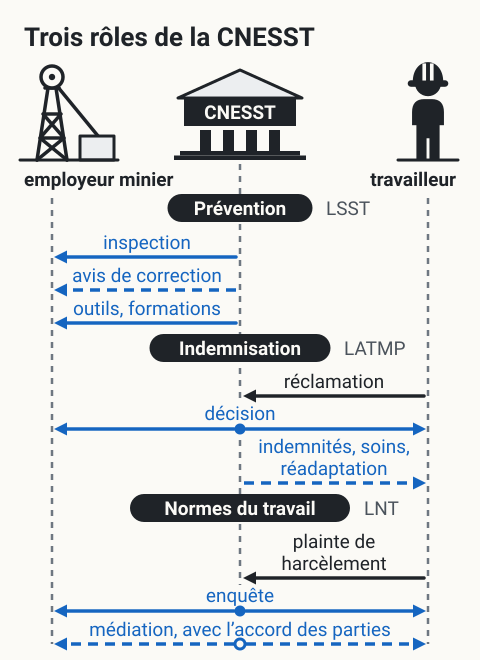
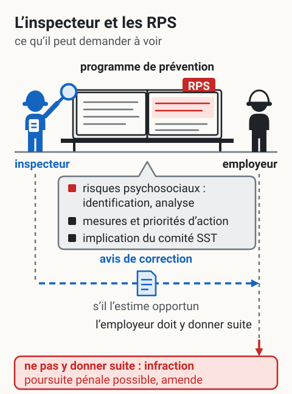

CNESST, rôles et pouvoirs
L'essentiel : La CNESST (Commission des normes, de l'équité, de la santé et de la sécurité du travail) est l'organisme québécois qui applique les lois du travail, incluant la LMRSST. Trois grands rôles : prévention (inspection, conformité), indemnisation (lésions professionnelles, LATMP), normes (LNT). Pour les RPS, ses pouvoirs ont été élargis depuis 2021.
{kind=link}

Toucher l'image pour l'agrandirLes trois rôles de la CNESST décrits dans cette page, entre l’employeur et le travailleur d’un site minier. Schéma de principe : les tirets marquent ce qui dépend d’une condition ; aucun délai, montant ni fréquence.
Lire le schéma en texte
- En haut, trois acteurs : à gauche, l’employeur minier (un chevalement et son bâtiment) ; au centre, la CNESST ; à droite, le travailleur. Flèches bleues : ce que fait la CNESST ; flèches noires : ce que le travailleur lui adresse ; en tirets : ce qui dépend d’une condition.
- Prévention (LSST) : la CNESST agit auprès de l’employeur par l’inspection et par le soutien (outils, formations) ; l’inspecteur peut, s’il l’estime opportun, émettre un avis de correction (art. 182).
- Indemnisation (LATMP) : le travailleur produit sa réclamation à la CNESST, qui rend une décision notifiée aux intéressés, dont l’employeur (art. 354) ; selon la décision, la réparation comprend les soins, la réadaptation et les indemnités (art. 1).
- Normes du travail (LNT) : le travailleur peut adresser une plainte de harcèlement psychologique, et la CNESST fait enquête (art. 123.6 et 123.8). Au cours de l’enquête et avec l’accord des parties, la CNESST peut demander au ministre de nommer une personne pour entreprendre avec elles une médiation (art. 123.10).
D’après L’essentiel et les tableaux « Rôle 1 : prévention », « Rôle 2 : indemnisation » et « Rôle 3 : normes du travail » de cette page. Textes officiels (recueil du wiki) : LSST, art. 167, 179 et 182 ; LATMP, art. 1, 349 et 354 ; LNT, art. 123.6, 123.8 et 123.10. Schéma de principe.
Présentation
CNESST : organisme paritaire (employeurs et travailleurs) créé par la fusion de plusieurs organismes (CSST, CNT, CES) en 2016. Application des lois suivantes
| Loi | Domaine |
|---|---|
| LSST et LMRSST, vue d'ensemble pour les RPS | Santé et sécurité du travail |
| LATMP | Lésions professionnelles, indemnisation |
| LNT | Normes du travail (salaire, harcèlement, etc.) |
| Loi sur l'équité salariale | Équité salariale |
| Loi sur les accidents du travail | Régime d'indemnisation |
Trois grands rôles
Rôle 1 : prévention
| Activité | Détail |
|---|---|
| Inspection | Visites de conformité (programmées ou suite à plainte) |
| Avis de correction | Émis si manquement constaté |
| Sanctions administratives | Amendes en cas de non-conformité |
| Soutien aux employeurs | Outils, formations, gabarits |
| Statistiques et veille | Surveillance des lésions et tendances |
Rôle 2 : indemnisation
| Activité | Détail |
|---|---|
| Réception des réclamations | Lésions professionnelles, harcèlement |
| Évaluation médico-administrative | Acceptation, refus, expertise |
| Versement d'indemnités | Salaire, soins, réadaptation |
| Droit à la réadaptation et retour au travail | Soutien aux travailleurs |
| Recours et révision | Procédure interne, appel TAT |
Rôle 3 : normes du travail
| Activité | Détail |
|---|---|
| Salaire et conditions | Application de la LNT |
| Harcèlement psychologique, recours | Recevoir et traiter les plaintes |
| Médiation | Service de médiation pour certains litiges |
| Information aux travailleurs | Sur leurs droits |
Pouvoirs spécifiques aux RPS
Depuis la LMRSST
| Pouvoir | Détail |
|---|---|
| Vérification du programme de prévention | Section RPS incluse |
| Inspection en lien avec RPS | Avis de correction si défaillance |
| Reconnaissance de lésions psychologiques | Décisions LATMP |
| Application de la politique anti-violence | Vérification des mesures |
| Sanctions | Amendes administratives en cas de manquement |
L'inspecteur CNESST peut désormais demander à voir comment l'employeur a identifié les RPS, quel plan d'action est en place, et comment le comité SST est impliqué. Voir Inspecteur CNESST et RPS.
{kind=link}

Toucher l'image pour l'agrandirCe que l’inspecteur peut demander à voir sur les risques psychosociaux, et la suite que prévoit la LSST. Schéma de principe : ni délai, ni montant.
Lire le schéma en texte
- L’inspecteur, en bleu, tend une loupe vers le programme de prévention de l’employeur, ouvert à l’onglet RPS : il a accès à tous les livres, registres et dossiers de l’employeur (LSST, art. 179).
- Ce qu’il peut notamment demander à voir : l’identification et l’analyse des risques psychosociaux, les mesures et priorités d’action, l’implication du comité SST (LMRSST, art. 144 et 154, qui modifient les art. 59 et 78 de la LSST).
- S’il l’estime opportun (flèche en tirets), il émet un avis de correction qui enjoint de se conformer à la loi ou aux règlements ; l’employeur doit y donner suite (LSST, art. 182 et 184).
- Quiconque contrevient à la loi ou aux règlements commet une infraction, ce qui vaut pour qui ne donne pas suite à l’avis ; la CNESST peut intenter une poursuite pénale, et l’infraction rend passible d’une amende (LSST, art. 236 et 242).
D’après la section « Pouvoirs spécifiques aux RPS » de cette page. Textes officiels (recueil du wiki) : LSST, art. 179, 182, 184, 236 et 242 ; contenu du programme de prévention : LMRSST, art. 144 (modifie l’art. 59 de la LSST) ; comité de santé et de sécurité : LSST, art. 78, modifié par la LMRSST, art. 154. Schéma de principe.
Application en mines
Pour un employeur minier
| Situation | Interaction CNESST |
|---|---|
| Inspection annuelle ou suite à plainte | L'inspecteur peut vérifier la section RPS du programme |
| Réclamation d'un travailleur pour lésion psychologique | Décision sur l'admissibilité, indemnisation |
| Plainte de harcèlement | Investigation, recours |
| Accident grave | Enquête CNESST |
| Demande de soutien | Outils gratuits, formations, conseillers en prévention |
Bonne pratique : maintenir une relation de transparence avec la CNESST. Documenter, communiquer, demander conseil avant l'inspection plutôt qu'après une non-conformité.
Documents et outils
| Document | Type | Source |
|---|---|---|
| Site officiel CNESST | Site web | cnesst.gouv.qc.ca |
| Guide CNESST sur les obligations de l'employeur | CNESST | |
| Statistiques annuelles CNESST | Rapport | CNESST |
| Foire aux questions LMRSST, vue d'ensemble pour les RPS | Page web | CNESST |
| Procédures de plainte et recours | CNESST |
Voir le centre de ressources : 📁 Documents et outils et ⚖️ Index LMRSST, CNESST.
Pour aller plus loin
Références
Articles wiki connexes